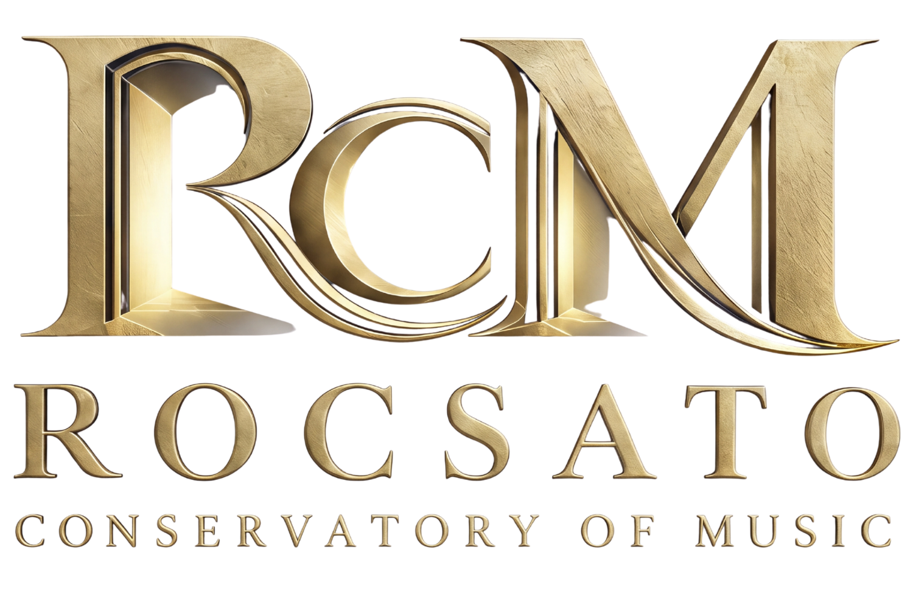

Musical Preparation in a Classical Tradition
The Disciplines of Rocsato
Find Your Instrument
Six disciplined traditions. Mastery cultivated through lineage, devotion, and rigorous acoustic study.
Piano
Where discipline becomes expression.
Build technique, confidence, and musical independence at the keyboard—from the first notes to advanced repertoire.
Strings
Learn to make the instrument sing.
Develop a strong technical foundation while learning the phrasing, sensitivity, and musicianship that give string playing its voice.
Brass
Sound with presence.
Build breath, tone, control, and confidence while discovering the power and color of the brass tradition.
Woodwinds
Precision. Color. Character.
Develop breath, articulation, technique, and musical expression across the rich voices of the woodwind family.
Voice
Your instrument is already with you.
Build healthy technique, confidence, and artistry while discovering the range and character of your own voice.
Historical Performance
Hear the past come alive.
Explore historic instruments, performance practices, and musical traditions through the sounds and techniques that shaped earlier centuries.